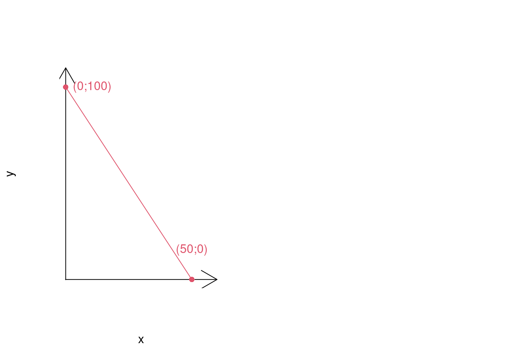
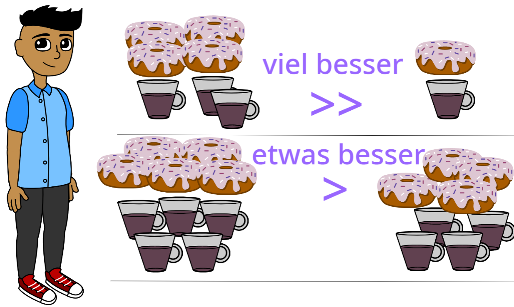
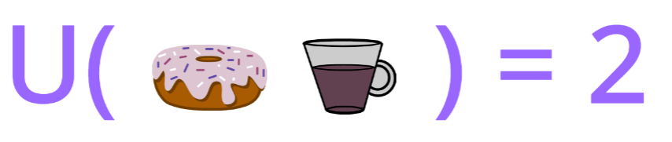
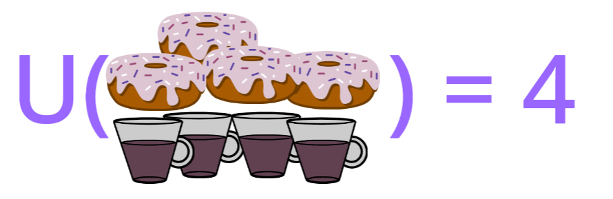
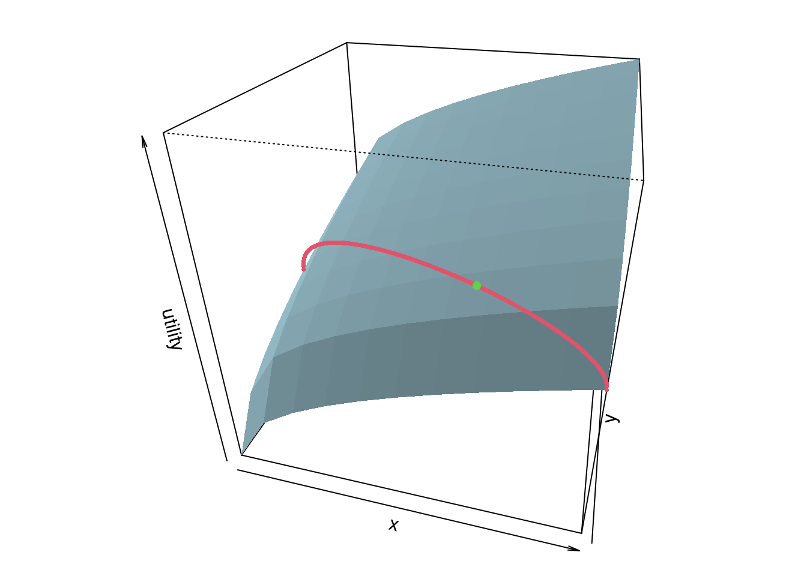

Mathematics for Business and Economics
2024-08-30
Chapter 1 Introduction
Some comments before we start
Consider the following precepts for achieving a mathematical mindset, courtesy of Jo Boaler of youcubed at Stanford University:
- Everyone Can Learn Math to the Highest Levels. Everyone can reach the highest levels they want to, with hard work.
- Mistakes are Valuable. Mistakes grow your brain! It is good to struggle and make mistakes.
- Questions are Really Important. Always ask questions, always answer questions. Ask yourself: why does that make sense?
- Math is about Creativity and Making Sense. Math is a very creative subject that is, at its core, about visualizing patterns and creating solution paths that others can see, discuss and critique.
- Math is about Connections and Communicating. Math is a connected subject, and a form of communication. Represent math in different forms; e.g., words, a picture, a graph, an equation; and link them.
- Math Class is about Learning, Not Performing. Math is a growth subject. It takes time to learn and it is all about effort.
Why do we need the mathematics for business and economics?
Your Thoughts
A generic answer 😄
Business mathematics enables us to solve complex economic problems using mathematical methods.
Many economic variables are quantitative in nature (prices, quantities,…). Economic models capture the relationships between these variables. Mathematics has the accuracy, precision and capacity to grasp complex systems. Here are some examples of how mathematical models are used to explain business relationships: maximizing sales, key performance indicators, break-even point, optimization of operational processes in production and warehousing.
Example: utility maximization
Here is an example of a possible question:
Example 1.1 (Utility maximization) Student Alex likes to eat donuts and coffee. A donut costs \(P_x = 2 ~Euro\). A cup of coffee costs \(P_y = 4~ Euro\). Alex’s budget for donuts and coffee is \(200~Euros\) per month.
Questions:
How many donuts and how many cups of coffee will Alex ideally consume?
If Alex’s budget increases, what will he spend an extra dollar on?
What are the benefits of a budget increase of one euro/ an extra donut/ an extra cup of coffee?
To describe the problem mathematically we need:
- A relation that ensures that Alex sticks to his budget \(\leadsto\) budget restriction.
- A concept that describes the enjoyment of the consumed amounts of donuts and coffee \(\leadsto\) utility function.
Example 1.2 (Budget constraint)
- Alex can spend a maximum of 200 euros per month on donuts and coffee.
- If he exhausts his budget, he can make the following budget splits, for example:
- If Alex skips coffee, he can eat 100 donuts.
- If he skips donuts, he can Drink 50 cups of coffee.
- Alternatively he can choose 50 donuts and 25 cups of coffee.
- If Alex exhausts his budget, the following applies: \[x \cdot P_X + y \cdot P_Y = Budget.\] – Inserting \(P_X = 2\) and \(P_Y = 4\) yields: \[2x + 4y = 200\] – The number \(y\) of the coffee cups can be expressed as a function of the number \(x\) of the donuts consumed: \[y(x)=\frac{200-2x}{4}=\frac{200}{4}-\frac 12 x\] or \[y(x)=50 -0.5 x\]
- This is called the budget constraint.

The budget constraint connects all the points that represent all “financeable” combinations of donat and coffee quantities if the budget is exhausted.
Note that the slope of the budget line is \(-\frac 12\) in the example. In the In general, the negative slope results from the quotient of the prices: \(-\frac{P_X}{P_Y}\).
Frage:
Example 1.3 (Utility function)
- Alex ponders the benefits of consuming different amounts of donuts and coffee:

- Alex’s first consideration suggests that Alex’s utility function is represented by an increasing function of the quantities consumed. That’s because the enjoyment level increases with more donuts and more coffee.
- The second consideration means that although the benefit increases with the amounts, the increase becomes progressively smaller as the amounts are increased. (You are certainly familiar with this effect from your own consumption: You are no longer so happy when you have already consumed a lot of the same thing.) This effect is called diminishing marginal utility
- A concrete functional form such as \[U(x,y) = \sqrt{x} + \sqrt{y}\] allows the utility level to be represented as a number,
which makes it easier to compare different consumption options. In this the utility is:

since \(U(1;1)=\sqrt{1} + \sqrt{1} = 2\),

since \(U(4;4)=\sqrt{4} + \sqrt{4} = 4\) and
since(U(4;1)=- = 3).
- = 3).
If donuts and coffee cups are divisible, one can imagine consuming all possible (and not just integer) amounts, e.g. \(x=3.2\) and \(y=2.4\), or \(U( 3.2;2.4) = \sqrt{3.2} + \sqrt{2.4} = 3.338\).
Example 1.1 (Utility maximization)
- Alex strives for maximum utility while adhering to budget restrictions
- Maximization problem: \[\max_{x,y} U(x,y) = \max_{x,y} (\sqrt x + \sqrt y) \]
- under the restriction: \[2x + 4y = 200\]
Solution
By reshaping the budget constraint to: \(y (x) = (100 − x)/2\) \[\max_{x,y} U(x,y (x)) = \max_x (\sqrt x + \sqrt{(100 − x)/2}.\]
Derivative: \[U^\prime (x,y (x)) = \frac 1{2\sqrt x} - \frac 1{4\sqrt{(100-x)/2}}.\]
Equate to \(0\); Solving for \(x\) yields \(x = \frac{200}3 = 66.6667\) , \(y (\frac{200}3) = \frac {50}3 = 16.6667\).
Check that there is a maximum: \[U^{\prime\prime} = -\frac 1{4x^{3/2}} - \frac 1{8\left\{(100 - x)/2\right\}^{3/2}} \stackrel{x=\frac {200}3}{=} -0.0023<0\]
If reshaping the budget restriction is not possible \(\rightarrow\) method of Lagrange.

Example 1.4 (Marginal Utility)
- The marginal utility associated with the additional consumption of a donut is given by the partial derivative with respect to \(x\):
\[\frac{\partial U(x,y)}{\partial x} = \frac\partial{\partial x}(\sqrt x + \sqrt y) = \frac 1{2\sqrt x}\]
- Analogous, marginal utility for espresso:
\[\frac{\partial U(x,y)}{\partial y} = \frac 1{2\sqrt y}\]